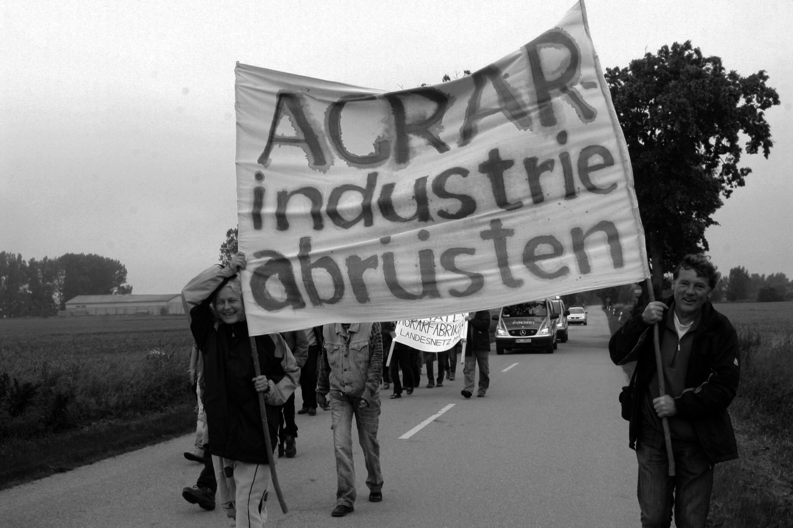

„Rettet das Landleben“

Überleben außerhalb städtischer Ballungszentren wird schwieriger. Nach 1989 baute die Agrarindustrie in Nordostdeutschland 9 von 10 landwirtschaftlichen Arbeitsplätzen ab. Die Aufgabe der Tierproduktion und Investitionen in neue Landmaschinen für riesige Ländereien sparten Personalkosten. Abwandernde Arbeitssuchende hinterließen blühende Landschaften im Freiraum Ost. Das Gelb der Rapsblüte fand seinen Platz neben dem Blau der See und dem Grün der wenigen Wälder im Landeslogo von MV. Etwas weiter westwärts stiegen zeitgleich die Nitratwerte im holländischen Trinkwasser ins Unerträgliche. Der Schweineproduzent Adriaanus Straathof konnte im gülle-überdüngten Gelderland seine „Mistrechte“ verkaufen und seinen Gewinn in Vorpommern investieren. Er startete ohne Kadaverhaus in Medow bei Anklam und ließ Berge von Schweinen in der Sonne verwesen. Der wiederholt verurteilte Unternehmer tauchte 2006 gemeinsam mit einem Vertreter der LMS Landwirtschaftsberatung Mecklenburg-Vorpommern/ Schleswig-Holstein GmbH und dem Geschäftsführer der Daberkower Landhof AG im Alt Telliner Gemeinderat auf. Mitgebracht hatte diese illustre Runde dessen stellvertretende Bürgermeisterin Silvia Ey, einer Referentin für Tierproduktion des Landesbauernverbandes MV, inzwischen auch Geschäftsführerin des Geflügelwirtschaftsverbandes MV. Straathofs Plan, hier am Tollensetal die größte Ferkelfabrik Europas zu errichten, wurde begrüßt. Der ausgesuchte Platz in der Gemeinde, sei der beste im ganzen Lande, verkündete der Herr von der LMS. Die Daberkower Landhof AG könne auf 10.000 Hektar Gülle abnehmen, erklärte deren Geschäftsführer Kossalla. Die amtierende rotschwarze Landesregierung hatte im gleichen Jahr die Veredlung ihres Tourismus- und Gesundheitslandes durch bodenungebundene Tierproduktion beschlossen. Genehmigungsverfahren im Bereich der Errichtung von Tierhaltungsanlagen sollten gestrafft und durch eine intensive Öffentlichkeitsarbeit begleitet werden. Draußen vor der Tür aber demonstrierte bereits die Bürgerinitiative „Leben am Tollensetal“ gegen den Beschluss der Gemeindevertreter für die Ferkelfabrik, der später von der zuständigen Rechtsaufsicht kassiert wurde, da ein beteiligter Gemeindevertreter vom geplanten Verkauf des erforderlichen Grundstücks profitiert hätte. Denn seit der Wende 89 hatten auch ganz andere Menschen die Potentiale der Region erkannt und den Wunsch, unabhängig von diffusen Seilschaften hier eine neue Perspektive zu finden. Neben vielen Selbstständigen kamen junge Mütter, die für das Heranwachsen ihrer Kinder im Grünen der Stadt den Rücken gekehrt hatten und auch Ältere die ihren Lebendabend hier verbringen wollten. Dazu kamen Touristiker, denen die Attraktivität der Landschaft nicht entgangen war. Unter dem Motto „Rettet das Landleben“ fanden 2008 und 2009 Sternmärsche statt. Die Zugezogenen schafften es, von der Mehrheit der Einwohner Unterschriften gegen die Ferkelfabrik zu bekommen. Der Bürgermeister, der Wirt Frank Karstädt, versprach bei der Übergabe der Unterschriftenliste, alles dafür zu tun, dass die Anlage nicht komme. Stattdessen kam die damalige Vizelandtagspräsidentin Renate Holznagel (CDU) zu ihm in die Telliner Storchenbar und behauptete, dass wenn ein Investor so einen Antrag stelle, muss die Gemeindevertretung zustimmen. 2009 wurde ihr vom Verteidigungsminister der Dienstgrad Oberstabsveterinär verliehen. Der Veredlungswunsch der Landesregierung wurde durchgesetzt. Die knappe Mehrheit für den Bauantrag der Ferkelfabrik kam aber nur durch Beteiligung des inzwischen unbefangenen Gemeindevertreters Olaf Juhnke zustande, dessen Frau dem Investor das Bauland schon verkaufte hatte und deren Firma dort erst später Bauaufträge bekam. Zur Anhörung der über 700 Einwände gegen die Anlage, die pro Jahr 250.000 Ferkel produzieren soll, saßen die ehrenamtlichen Einwender drei Tage dem gutbezahlten Anwalt des Investors gegenüber und mussten nach der abschließenden „Würdigung“ ihrer Arbeit erfahren, das Widersprüche keine aufschiebende Wirkung haben, da ein öffentliches Interesse an der sofortigen Vollziehbarkeit dieses Verwaltungsaktes besteht. „Die Landwirtschaft habe sich zu einer tragenden Säule der Wirtschaft des Landes entwickelt. Diese soll mit zügigen, konzentrierten Genehmigungsverfahren und der Weiterführung der Standortinitiative „MV tut gut“ in Zusammenarbeit mit dem Agrarmarketing ausgebaut werden.“ Auch die LMS Landwirtschaftsberatung bekam ihr Geld von Herrn Straathof. Sie reichte den Antrag bei der staatlichen Genehmigungsbehörde ein u. beförderte so seine Genehmigung. Das Land MV, welches mit 64,8% größter Gesellschafter neben dem Bauernverband mit 25,2% Anteilen an der LMS ist, war somit gleichzeitig Antragsteller und Genehmigungsbehörde, damals StAUN heute StALU. Das anfängliche Staunen über dieses Prozedere ist inzwischen einer anderen Betroffenheit gewichen, die an stalinistische Zeiten erinnern könnte, wenn es nicht so kurios wäre. Und so wurde pünktlich am 7. Oktober, am Tag der gescheiterten Republik verkündet, Europas größte Ferkelfabrik kann gebaut werden. Bau auf, bau auf... Und immer wieder taucht das schöne Wort „Ferkelzucht“ auf. In der Vorweihnachtszeit 2010 formierte sich eine neue Bürgerinitiative „Rettet das Landleben am Tollensetal“, die in lückenloser Folge seitdem Montagsinspektionen am geplanten Anlagenstandort durchführt.
Aber nach fünfjähriger Wartezeit startete Straathof in diesem Frühjahr kräftig durch. Zuerst ließ er geschützte Fledermausquartiere auf seinem Baugelände abreißen, dann expandierte seine Baufeldfreimachung vor offiziellem Baubeginn zur Großbaustelle. Im Vorfeld dazu hatte er Widerspruch gegen die Einhaltung der mit der sofortigen Vollziehbarkeit des Baubeginns verbundenen Nebenbestimmungen eingelegt. Das StALU gab grünes Licht für den Investor. Die Empörung dagegen schlug große Wellen. Die Auflagen wurden wieder in Kraft gesetzt. Statt des geplanten Baubeginns wurden die Bagger abgezogen und ca. 60 Demonstranten spazierten vom geplanten Anlagenstandort in das ruinöse Nachbardorf Neu Plötz u. zurück, begleitet von einem großen Aufgebot der Landespolizei. In MV hatte der Wahlkampf begonnen. Die amtierende Regierung versprach penibel auf die Einhaltung der Nebenbestimmung zu achten. Ein verbindliches Brandschutzgutachten legt fest, 10.500 Muttersauen und 35.000 Ferkel sollen im Brandfall mit 55 km/h in 10 Minuten aus der Anlage fliehen können. Unter anderem gegen diesen Unsinn zogen am Wochenende vor der Landtagswahl ca. 300 Demonstranten vor die Baustelle. Dort sind freilaufende scharfe Hunde die ersten Nutztiere auf dem von Stacheldraht umzäunten Gelände.
Und während am Tollensetal eine 10.000 Sauenanlage mit aller Gewalt durchgedrückt wird, will die belgisch-flämische Vereinigung der Schweinehalter 100.000 Sauen abstocken. Schweinehaltern soll eine Abfindung in Höhe von 650 € pro Sau gezahlt werden. Die Gülle soll weiter nach Osten wandern und immer mehr Landbewohner werden das Grün der Städte wieder lieben lernen. Inzwischen leben weltweit weniger Menschen in ländlichen Räumen als in städtischen Ballungszentren.
Mehr regionalen Machenschaften und überregionale Folgen der geplanten Ferkelfabrik sind im Bezug zur vergangenen Schweriner Bundesgartenschau zu finden: http://www.buga2009.blogsport.de
Dieser Text erschien im September 2011 in Ausgabe 64 der STADTGESPRÄCHE